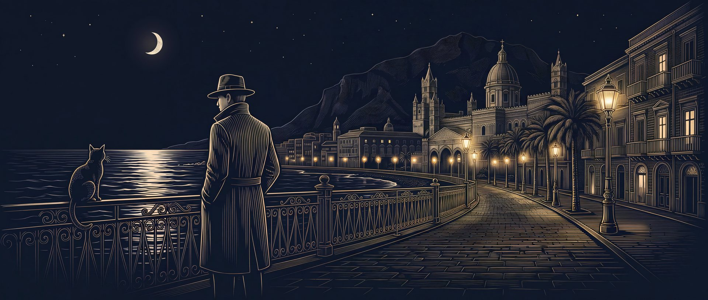
Palermo Noir: the mafia party game for phones and a TV
Hidden roles on your phones. The town on your TV.
Everybody plays, even the narrator
Palermo Noir is the hidden-role game Greeks know as Palermo, a cousin of Mafia and Werewolf. It always needed one friend who sat out: the narrator who knew every secret and counted the votes. Here the game takes that job. Every phone holds its player's secret card, the TV shows the town square, and a deep noir voice runs every night and every day, in English or Greek.

One phone each, one TV for the room
You need 6 to 14 players, a phone each, and a screen the whole room can see: a smart TV's browser or a laptop on the TV. Nobody installs anything.
Each of you has a role. Press and hold your card to see it… and show it to no one.
- Open a room. The host opens Palermo Noir on their phone and taps Create a room.
- Put the town on the TV. Open vgraphics.gr/tv in the TV's browser and type the room code. Friends scan the QR code on the screen to join.
- Choose the rules. Classic, Quick or Full house, or your own: the host picks the roles and the timers, and the TV shows the roles in play.
- Hold to see your card. Everyone gets a secret role. Your card shows only while you hold it, and every card has the same frame.
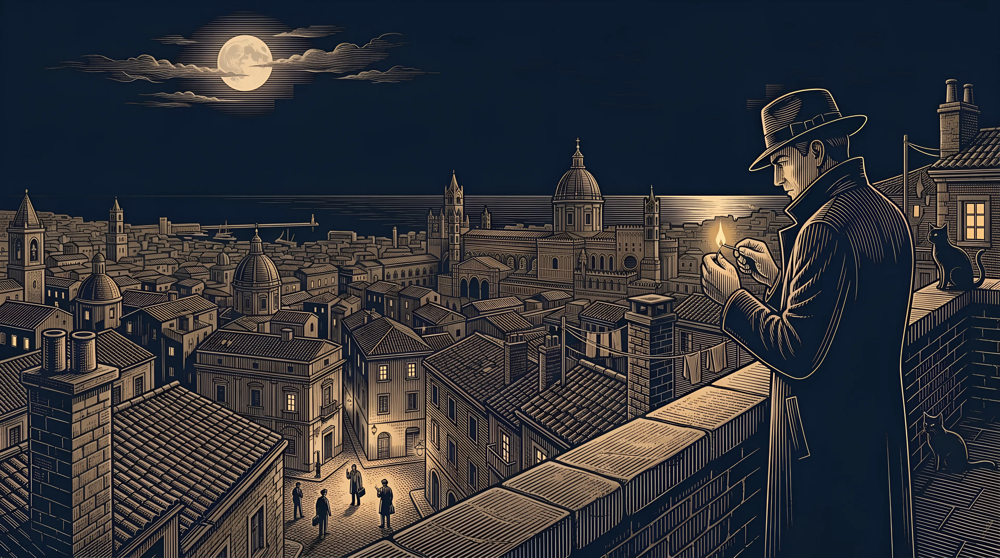
The town sleeps, two taps each
The TV goes dark and the narrator sends the town to sleep. Every phone asks for two taps: your role's move, or who you trust, then who you suspect. So every phone looks the same, and nobody can tell who did what. On the first night the killers only meet each other and the Police Officer learns the Known Killer's face; from the second night the killers choose a victim.
The town is whispering. Which name do you hear?
- 2 tapson every phone
- 45 snight timer by default
- Silentphones never make a sound
- 1 victimfrom the second night


Accuse, argue, vote
At dawn the narrator tells the town who the killers found, or that the night passed without a murder, and the TV shows the town's rumour: the most suspected name. Then the room argues, and votes someone out of town.
Talk. The killer is among you… and listening.
The accusation board
Point at a suspect from your phone; the arrows show live on the TV, and the most accused gets 30 seconds to answer before the vote.
Open or secret votes
Watch every vote arrive as an arrow, or keep the ballots secret until the end.
Ties and last words
Tied players defend themselves and the town votes again. Whoever goes out may say a few last words.
The night announcer
From then on they tell the dawns, as Greek groups always did.


The truth comes out
The game ends the moment one side has won: the town when every killer is out, the killers when they match everyone else, the Madman alone if the town votes him out. Then the TV tells the whole story, and everyone stays in the room to play again.
The last killer has fallen. Palermo can finally sleep in peace. The town wins!
Every card turned
Every role is shown, then the winners' banner goes up.
The story of every night
Who the killers chose, who the Doctor saved, and who voted whom.
Awards
The sharpest eye, the best liar, the lifesaver and the survivor.
XP and achievements
Every game counts on your VHub profile, in every VGraphics game.


Every role in the deck
The classic roles are in every game: the Known and the Hidden Killer, the Police Officer, the Doctor and the citizens. The extras unlock as a host plays, or all at once for groups who know Palermo. Scroll the deck.
- Killers
Known Killer
Every night you and your partners choose a victim. The Police Officer knows who you are.
- Team
- Killers
- Acts
- Every night from the second
- In the game
- Always
You and your partners meet on the first night. From the second night you choose a victim together: the player most of you pick is found at dawn, unless the Doctor protected them.
The Police Officer learns your face on the first night, so stay calm when the town looks your way. The killers win when they equal or outnumber everyone else.
More in the wiki → - Killers
Hidden Killer
Every night you and your partners choose a victim. The Police Officer doesn't know you.
- Team
- Killers
- Acts
- Every night from the second
- In the game
- Always
You meet your partners on the first night, but the Police Officer never learns who you are, and by default the Detective sees you as not a killer.
Choose the victim with your partners every night from the second, and win with them when the killers equal or outnumber the rest.
More in the wiki → 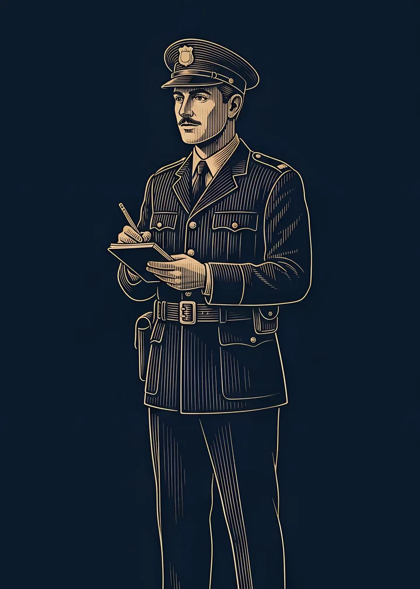
TownPolice Officer
On the first night you learn who the Known Killer is. Steer the town without giving yourself away.
- Team
- Town
- Acts
- The first night
- In the game
- Always
On the first night, while the Known Killer raises a hand, you see him. That's your only power.
Steer the town's votes toward him without giving yourself away: the killers will hunt for you. In some groups the host makes your death a win for the killers.
More in the wiki →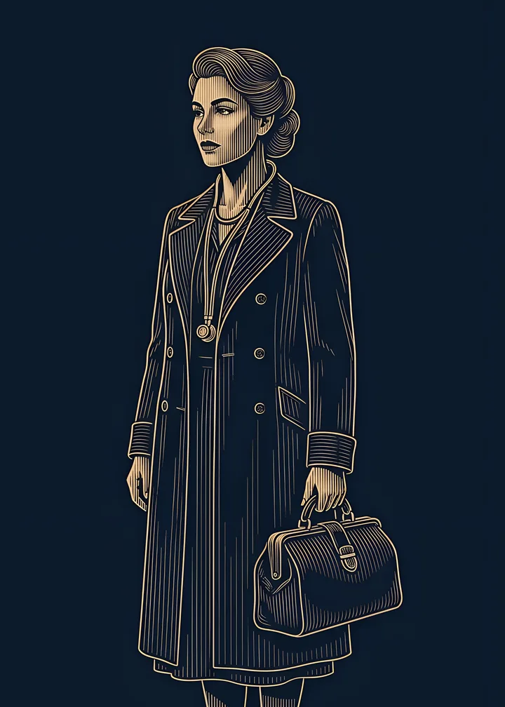
TownDoctor
From the second night, protect one player from the killers, never the same one two nights running.
- Team
- Town
- Acts
- Every night from the second
- In the game
- Always
Each night from the second, protect one player. If the killers choose them, the night passes without a murder.
You can't protect the same player two nights running, and by default you may save yourself once a game.
More in the wiki →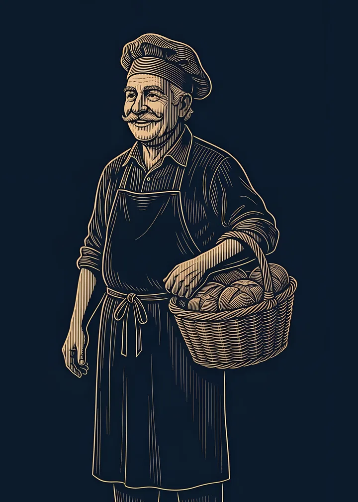
TownCitizen
No power: listen, accuse, and vote the killers out. Citizens come as a baker, a fisherman, a seamstress and a kiosk owner.
- Team
- Town
- Acts
- Every vote
- In the game
- Always
No night power. At night you answer who you trust and who you suspect, like everyone else, so your phone looks the same as the rest.
By day you listen, accuse and vote the killers out. Citizens come as a baker, a fisherman, a seamstress and a kiosk owner.
More in the wiki →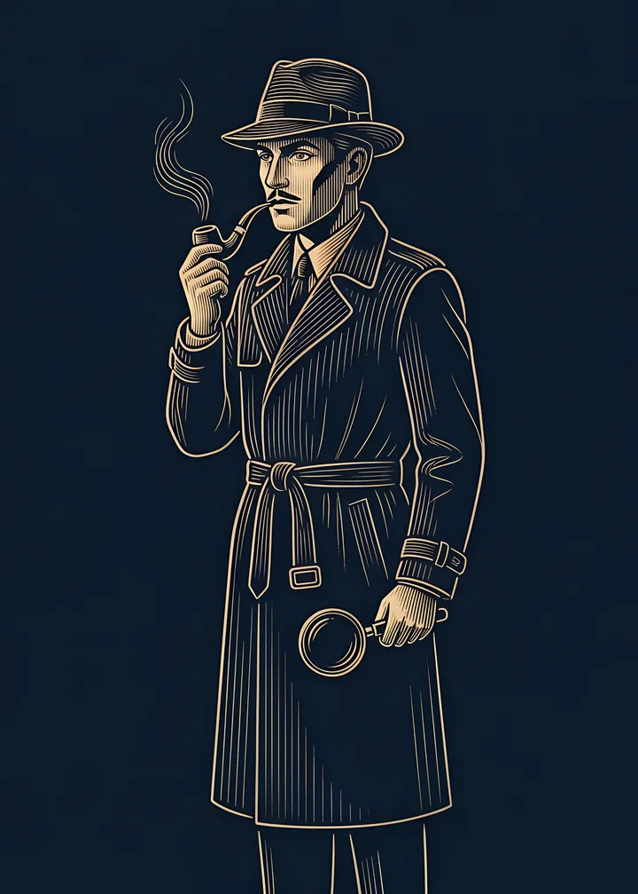
Town · extraDetective
Each night, check one player: killer or not.
- Team
- Town
- Acts
- Every night
- In the game
- After a host's first game
Each night, check one player: your phone answers "killer" or "not a killer" at once.
The Henchman and the Kamikaze show as not a killer, and so does the Hidden Killer unless the host turns that off.
More in the wiki →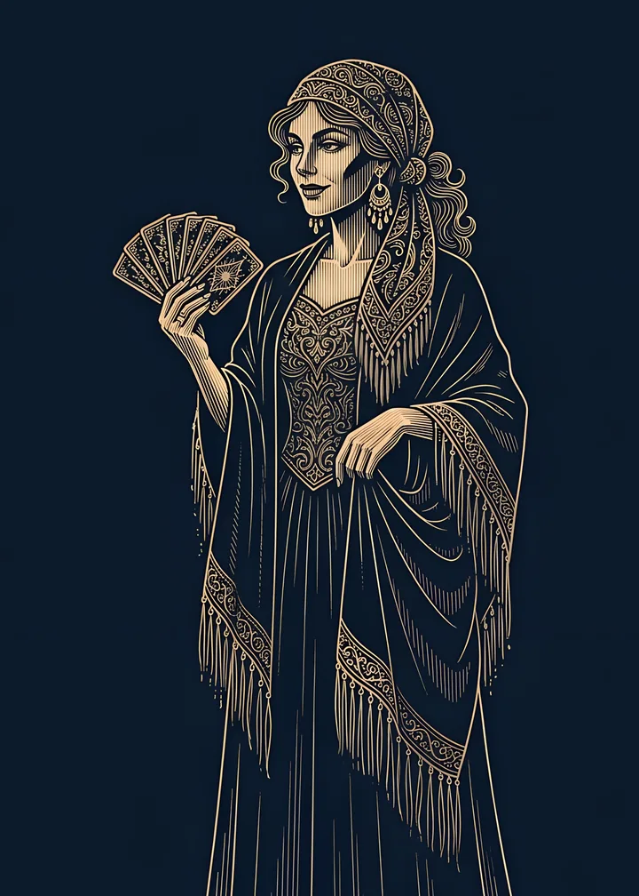
Town · extraSeer
Once a game, at night, learn one player's exact role.
- Team
- Town
- Acts
- One night a game
- In the game
- After five games
Once a game, at night, learn one player's exact role. Pick your night well, or answer "not tonight".
What you learn is yours alone: share it by day, or keep it until it matters.
More in the wiki →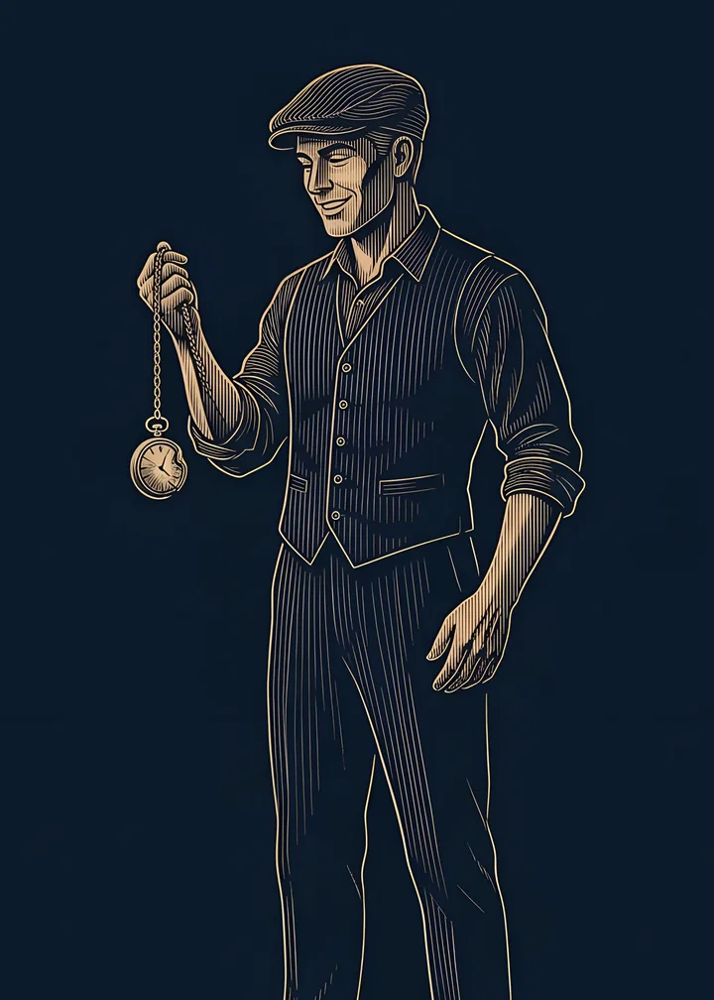
Town · extraBulletproof
You survive the killers' first attack on you, and only you are told.
- Team
- Town
- Acts
- When attacked
- In the game
- After five games
The first time the killers choose you, you survive. Only you are told; the dawn simply says the night passed without a murder.
After that you're as mortal as anyone, so use what you've learned.
More in the wiki →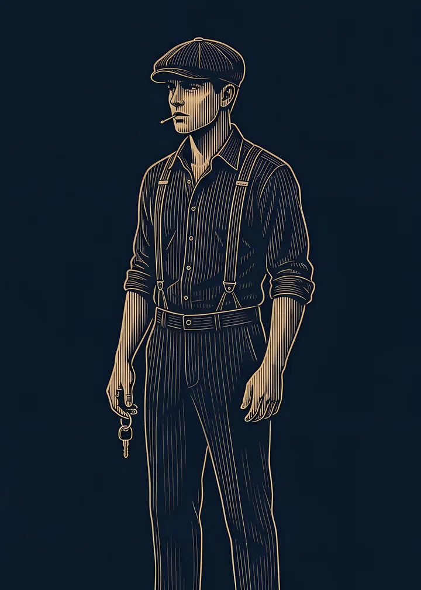
Killers · extraHenchman
You know the killers, but they don't know you. You win with them.
- Team
- Killers
- Acts
- No night action
- In the game
- After five games
You know who the killers are, but they don't know you. You don't kill, yet you win with them.
The Detective sees you as not a killer, and in the killers' head count you count as a townsperson.
More in the wiki →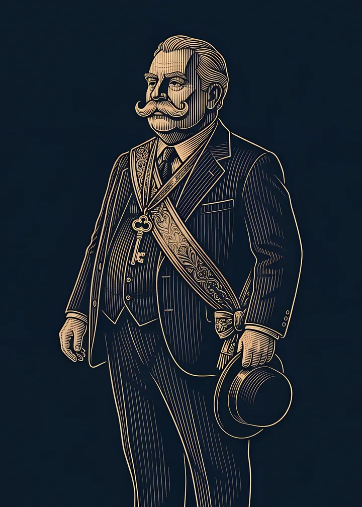
Town · extraMayor
Reveal yourself during a day: from then on your vote counts twice.
- Team
- Town
- Acts
- During a day
- In the game
- After a host's first game
Keep your role secret until the right moment, then tap Reveal during a day.
From then on a gold badge shows on your tile, everyone knows who you are, and your vote counts twice.
More in the wiki →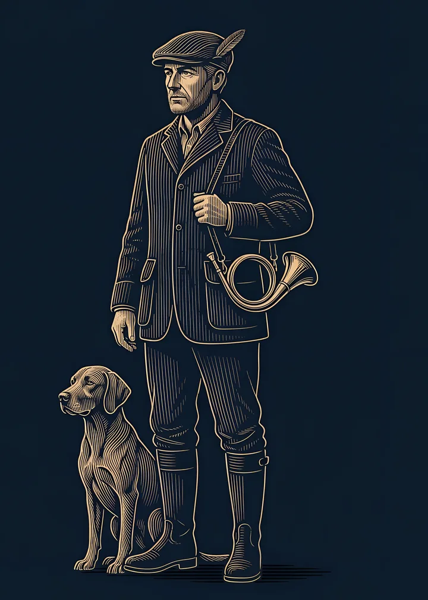
Town · extraHunter
When you're out, by vote or by night, you take one player with you.
- Team
- Town
- Acts
- When you go out
- In the game
- After a host's first game
When you go out, by the vote, by night or by a bomb, you have 20 seconds to take one player with you.
Take a killer and the town cheers; take a friend and you'll hear about it.
More in the wiki →- Town · extra
Lawyer
You're dealt 5 of 17 power cards, such as Objection!, Alibi and Appeal, and keep 2. Each one works once.
- Team
- Town
- Acts
- At its own moment
- In the game
- After five games
At the start you're dealt 5 of the 17 power cards in the briefcase and keep 2, such as Objection!, Alibi or Appeal.
Each card works once, at its own moment: at night, in the talk, at the vote or at a verdict. The TV shows when the Lawyer steps in, never who.
More in the wiki → 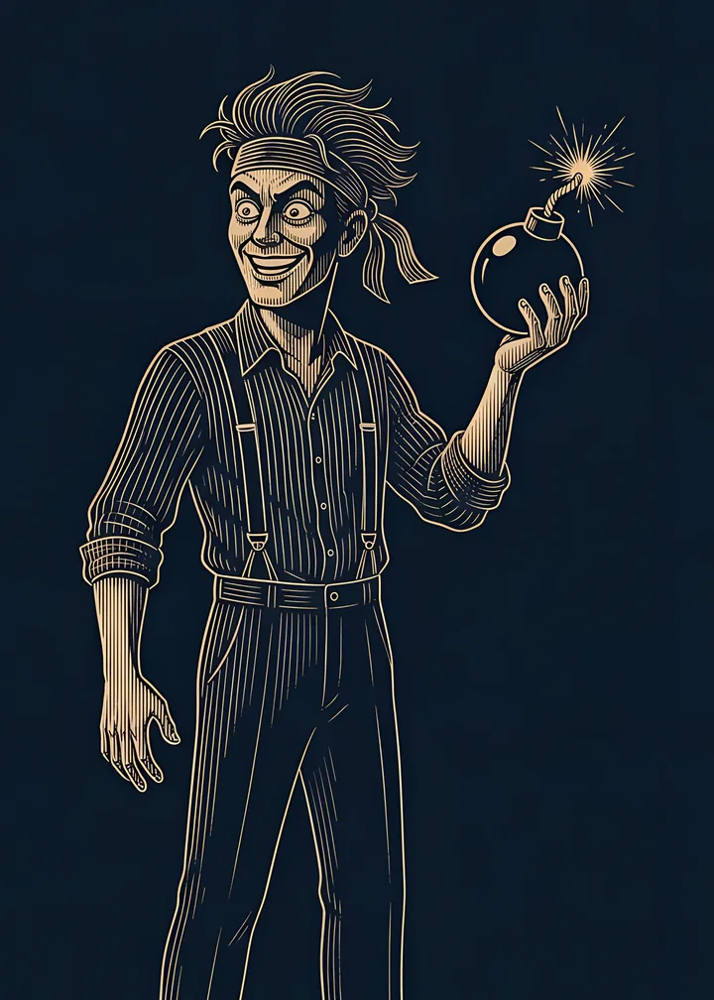
Killers · extraKamikaze
You're with the killers. Once, during a day, you can take one player down with you.
- Team
- Killers
- Acts
- Once, during a day
- In the game
- After five games
You're with the killers, and they know you.
Once, during a day's discussion, hold Explode and pick a player: both of you fall at once, with a bang on the TV.
More in the wiki →- Solo · extra
Madman
You win alone if the town votes you out, and that ends the game.
- Team
- Solo
- Acts
- When voted out
- In the game
- After a host's first game
You win alone if the town votes you out, and that ends the game on the spot, to your tarantella.
Killed at night, you just die. So act suspicious, but not too suspicious.
More in the wiki →
Listen to the soundtrack
The music of an evening in Palermo, in the order you hear it: a 1950s Sicilian noir chamber orchestra with staccato strings, clarinet, mandolin and accordion. Hushed for the night, sunny but suspicious at noon, relentless for the vote, and a theme for whoever wins. Press play and keep reading; a small player stays with you down the page.

No secret leaks
Every phone shows the same screens and asks for the same two taps at night, and your card shows only while you hold it.
How the night plays
A noir narrator
A deep voice on the TV tells every night and every dawn. It never says a name: the names are on the screen.
How a round plays
Nothing to install
A smart TV's browser or a laptop on the TV, and the phones you already have.
Phones and the TV
What is Palermo Noir?
A hidden-role mafia party game for a room of friends, the game Greeks know as Palermo, a cousin of Mafia and Werewolf. Your phone holds your secret card, the TV shows the town, and a noir narrator runs every night, so nobody has to sit out to lead the game.
How many players do we need?
From 6 to 14. By default the town hides two killers up to 11 players, and three from 12. The host picks the roles and the timers before the deal, or starts from a preset: Classic, Quick or Full house.
What do we need to play?
A phone each and one screen the whole room can see: a smart TV's browser, or a laptop on the TV. Open vgraphics.gr/tv on the screen and type the room code; friends scan the QR code to join. Nothing to install.
Is it free?
Yes, with every role in. Ads only show outside play, between games and never during one.
Do I need an account?
No. Join as a guest, or with your free VHub name, which keeps your games, XP and achievements across every VGraphics game. The TV signs in as a screen, never as a person.
Is it for kids?
It's for ages 13 and up. Each phone gives its year of birth once and only an age group is kept, never the year.
Which languages does it speak?
English or Greek. The narrator, the cards and every screen follow the host's language.
When can we play?
Rooms for your group open soon: on the web first, then on Android. Every release shows under What's new on this page.
What happens to our data?
A room closes 30 minutes after its last phone goes offline, or 8 hours after it opened, and is deleted 24 hours after it closes. A short summary of each game, with no names, identifiers or votes, is kept for 12 months. Analytics runs only with your consent. The privacy policy has the details.
Where can I read the rules?
In the wiki: every role, every card in the Lawyer's briefcase, and how a round plays, from the deal to the verdict.
For ages 13 and up
Each phone gives its year of birth once, and only an age group is kept, never the year. Players join as a guest or with their VHub name, and the TV signs in as a screen, never as a person.
Gather your town
Palermo Noir comes to the web first, then to Android. Free, for 6 to 14 players with a phone each and one TV.